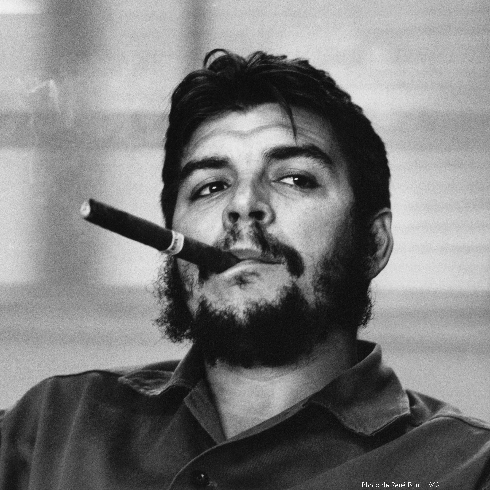

Volver a la página principal
Personajes Importantes de Izquierda
Karl Marx

Karl Marx fue un filósofo, economista, sociólogo y periodista alemán. Nacido en 1818 en Prusia, Marx es conocido por su análisis crítico del capitalismo y su defensa del socialismo. Su obra más influyente, "El Capital", ofrece una teoría económica detallada sobre la explotación del trabajador bajo el capitalismo. Marx también coescribió "El Manifiesto Comunista" con Friedrich Engels, donde aboga por la abolición de la propiedad privada y la creación de una sociedad sin clases. Su pensamiento ha tenido un profundo impacto en la teoría política y económica moderna.
Vladimir Lenin

Vladimir Lenin fue un revolucionario ruso y líder del Partido Bolchevique. Nacido en 1870, Lenin jugó un papel crucial en la Revolución de Octubre de 1917, que llevó al derrocamiento del gobierno provisional y al establecimiento del primer estado socialista del mundo. Lenin fue el arquitecto principal del régimen comunista en la Unión Soviética y promovió políticas como la nacionalización de la industria y la distribución de tierras a los campesinos. Su legado incluye la creación de un sistema de partido único y la fundación de la Internacional Comunista, que buscaba exportar la revolución a otros países.
Joseph Stalin

Joseph Stalin fue un líder político soviético que desempeñó un papel crucial en la transformación de la Unión Soviética en una potencia mundial. Nacido en Georgia en 1878, Stalin ascendió al poder después de la muerte de Lenin en 1924 y consolidó su control sobre el país a través de purgas políticas y la supresión de la oposición interna. Durante su gobierno, implementó políticas de industrialización acelerada y colectivización agrícola, que llevaron a un rápido crecimiento económico pero también causaron sufrimiento humano y represión política. Stalin fue un líder clave durante la Segunda Guerra Mundial, supervisando la defensa exitosa de la Unión Soviética contra la invasión nazi.
Che Guevara

Ernesto "Che" Guevara fue un revolucionario argentino-cubano y líder guerrillero. Nacido en Argentina en 1928, Guevara se unió a Fidel Castro en la Revolución Cubana de 1959, que derrocó al gobierno de Fulgencio Batista y estableció un estado socialista en Cuba. Guevara desempeñó varios roles importantes en el gobierno cubano, incluido el de Ministro de Industrias, pero también participó en actividades revolucionarias en otros países, como en el Congo y Bolivia. Su imagen icónica y su legado como defensor de la lucha armada y la justicia social lo convierten en una figura destacada en la historia del siglo XX.